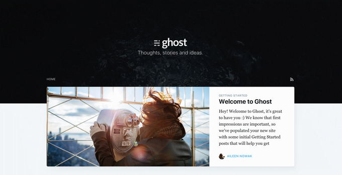

自定义文章摘要(Excerpt)
作者：王赛 · 2017年8月9日
随着 Ghost 1.0 和 Hemingway Mode 的发布，今天我们又发布了“自定义文章摘要”功能。 默认情况下，Ghost 会截取文章正文开头部分的文字（一般是55个字）作为文章摘要并显示在文章归档列表中。摘要有助于读者快速了解文章所要表达的内容。但是，如果你希望自己定
阅读全文首要“标签”
作者：王赛 · 2017年8月3日
在 Ghost 中，每一篇博文都可以有多个标签（tag），并且这些标签的排列顺序也被 Ghost 完整保存。第一个标签被认为是最重要的，因此被特殊对待。 现在，你可以在后台通过拖拽标签的位置来设置“首要标签”，并且能够通过 {{tags.[0]}} 获取到第一个标签。由于这种语法
阅读全文Ghost 1.0 版本正式发布
作者：王赛 · 2017年8月3日
大约四年前，我们在 Kickstarter 上推出了一个还处在原型阶段的 Ghost，这个小小的原型寄托了我们的一个想法，那就是创建 Web 上的下一代伟大的开源博客平台。 在初期阶段，我们真的只是专注于让所有功能能够运转起来。Ghost 是 Node.js 平台上为数不多的一个
阅读全文Ghost 1.0.0-beta.2 发布啦
作者：王赛 · 2017年8月3日
紧跟前两周发布的 Ghost 1.0.0-beta.1 的步伐，今天发布了 Ghost 1.0.0-beta.2 ，我们距离最终版本又迈了一大步。我们非常期盼这是最后一个 beta 版本，希望下一次发布的就是最终候选版。 在第一个 beta 版本发布后的日子里，我们发现并修复了
阅读全文1.0.0 Beta 版本发布啦！！！
作者：王赛 · 2017年8月3日
紧跟前两周发布的 Ghost 1.0.0-beta.1 的步伐，今天发布了 Ghost 1.0.0-beta.2 ，我们距离最终版本又迈了一大步。我们非常期盼这是最后一个 beta 版本，希望下一次发布的就是最终候选版。 在第一个 beta 版本发布后的日子里，我们发现并修复了
阅读全文Node.js v4 LTS 成为 Ghost 推荐版本
作者：王赛 · 2017年8月3日
从这周起，我们将 Ghost 推荐 Node.js 版本升级为 Node.js v4 LTS。 我们这样做其实已经落后于计划了。然而，经过大量测试之后，我们确信 Ghost 可以在 Node.js v4 平台上流畅的运行并且内存消耗比原来也减少了。目前，Ghost(Pro) 上托
阅读全文Ghost 桌面版 APP 正式发布，能同时管理多个 Ghost 博客
作者：王赛 · 2017年8月3日

虽然通过浏览器管理 Ghost 博客虽然很方便，但是在多个 tab 之间切换有时候也会很麻烦，嗯，如果能有一个独立的 app 应该使用起来会更爽一些！ 今天的主角来了，Ghost 桌面版 APP -- Ghost Desktop！ 目前，Ghost Desktop 还处于早期阶段
阅读全文为 Ubuntu 和 Debian 安装最新版本的 Node.js
作者：王赛 · 2017年8月3日
运行 Ghost 必须要安装 Node.js。但是 Ubuntu 或 Debian 的软件仓库中的 Node.js 更新较慢，甚至只能等到新版本发布才能有最新的 Node.js 用。下面我们说一下从 NodeSource 提供的仓库中安装最新版本的 Node.js。 支持的操作系
阅读全文Ghost 0.7.4 正式发布
作者：王赛 · 2017年8月3日

紧随 Ghost 官方脚步，Ghost 0.7.4 中文正式版发布了！这一版本包含了自 Ghost 0.7.3 版本发布以来所修正的 bug，主要是针对开放 API 功能的改进。 0.7.1、0.7.2、0.7.3 这些版本哪去了？ 从 Ghost 0.7.0 版本发布以来，Gh
阅读全文